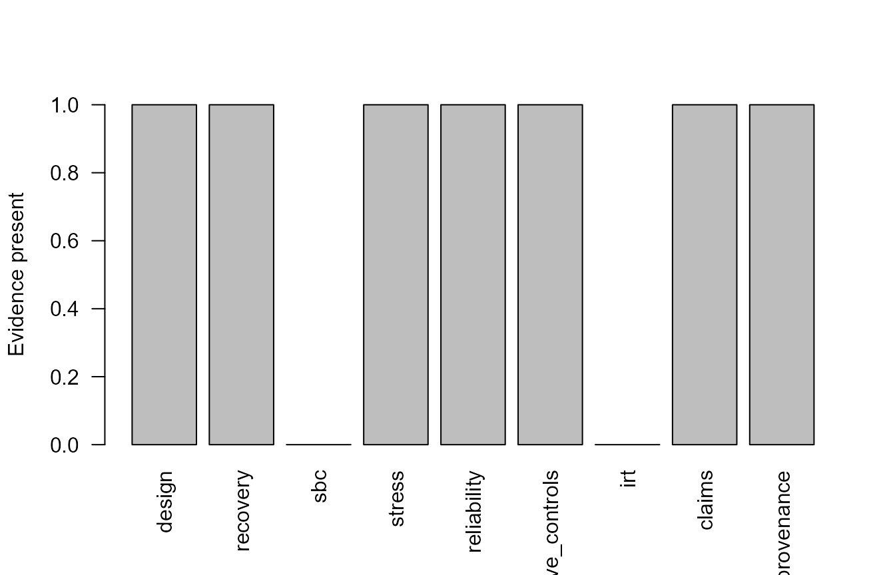

Frozen validation evidence programme
Source:vignettes/frozen-validation-evidence-programme.Rmd
frozen-validation-evidence-programme.RmdMilestone #2 separates software-validation evidence from substantive construct validity. A reproducible plan fixes scenario families, sample sizes, missingness, perturbations, replications, and seeds before results are interpreted.
plan <- eyeprocess_validation_plan(
sample_size = c(250L, 750L), n_items = c(12L, 24L),
missing_rate = c(0, .15), specification = c("correct", "misspecified"),
replications = 20L, seed = 20260811L
)
head(expand_eyeprocess_validation_plan(plan))
#> scenario_id family sample_size n_items missing_rate noise_level
#> 1 M2S0001 recovery 250 12 0 reference
#> 2 M2S0002 sbc 250 12 0 reference
#> 3 M2S0003 stress 250 12 0 reference
#> 4 M2S0004 reliability 250 12 0 reference
#> 5 M2S0005 negative_control 250 12 0 reference
#> 6 M2S0006 recovery 750 12 0 reference
#> specification replications master_seed scenario_seed
#> 1 correct 20 20260811 20365541
#> 2 correct 20 20260811 20470270
#> 3 correct 20 20260811 20574999
#> 4 correct 20 20260811 20679728
#> 5 correct 20 20260811 20784457
#> 6 correct 20 20260811 20889186Acceptance criteria are declared as reporting contracts rather than universal scientific thresholds.
rules <- list(
rmse = validation_acceptance_rule("rmse", "max", .20),
failure = validation_acceptance_rule("failure_rate", "max", .05)
)Frozen evidence objects contain integrity hashes and source-commit metadata. A passing release gate means only that the declared software-validation criteria were satisfied.
Frozen evidence as a visual object
A minimal deterministic freeze demonstrates the provenance-aware graphical interface. The example records software evidence only and should not be interpreted as a validity assessment of a psychological construct.
viz_claim <- eyeprocess::eyeprocess_validation_claim_matrix(
'C1',
'software behaviour is reproducible',
'E1',
'test',
'supported'
)
viz_freeze <- eyeprocess::freeze_eyeprocess_validation_evidence(
design = data.frame(id = 1),
recovery = data.frame(x = 1),
stress = data.frame(x = 1),
reliability = data.frame(x = 1),
negative_controls = data.frame(x = 1),
claims = viz_claim,
provenance = list(commit = 'documentation-example'),
source_commit = 'documentation-example'
)
stopifnot(
eyeprocess::verify_eyeprocess_validation_evidence(
viz_freeze
)
)
plot(viz_freeze)
Illustrative frozen validation-evidence object.